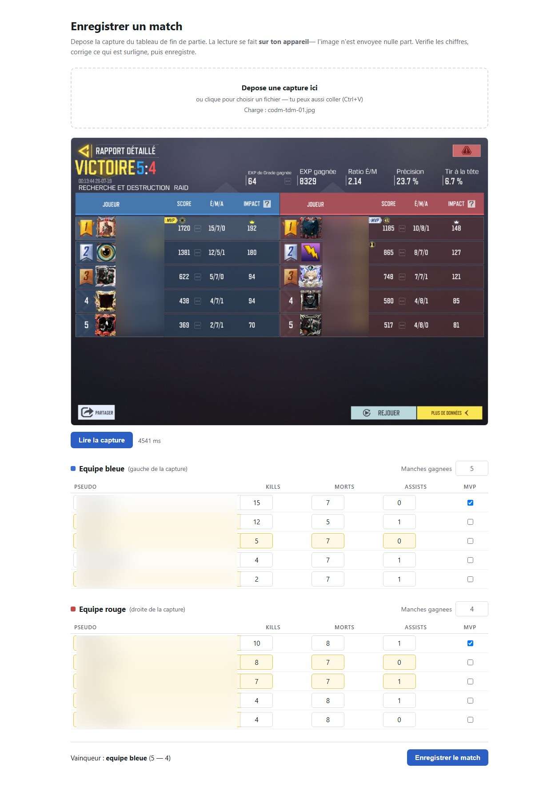
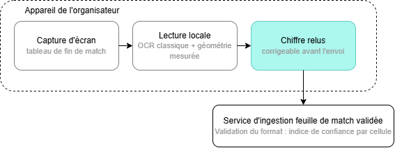
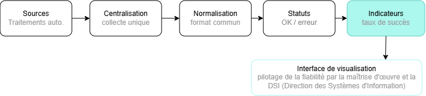
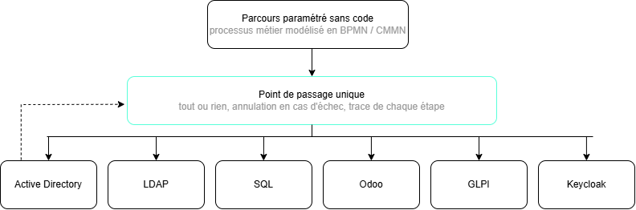
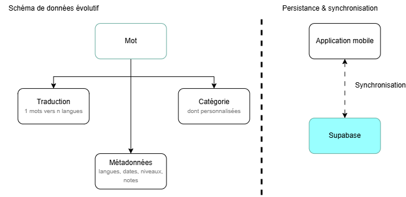

Expériences & réalisations
Pour chaque projet : le problème, ce que j'ai fait, le résultat.
Lecture automatique des résultats de match (OCR)
Service d'ingestion pour « The Circle », plateforme de tournois esport
Problème
Les scores de fin de match étaient recopiés à la main depuis une capture d'écran : lent et source d'erreurs dans les classements.
Ce que j'ai fait
- Service d'ingestion et son API
- Détection des colonnes par leur contenu, pas par leur position
- Lecture exécutée dans le navigateur : aucune image envoyée
- Lecture du score de manches pour déduire le vainqueur
- Documentation d'intégration et CI bloquante (GitHub Actions)
Résultats
- 114 / 114 Statistiques lues correctement
- 4 / 4 Vainqueurs déduits
- 4,5 s Par capture
- 0 Image transmise
Mesuré le 31/07/2026 sur 4 captures de référence (tablette et téléphone).
Exécution réelle

Schéma

Supervision des journaux d'activité (logs)
ESBanque, Nanterre · Développement / Data
Problème
Les logs des traitements automatisés étaient dispersés : difficile de suivre les incidents et de mesurer la fiabilité.
Ce que j'ai fait
- Analyse des sources de logs existantes
- Centralisation et normalisation des données
- Suivi des statuts OK / erreur
- Interface de visualisation et indicateurs (taux de succès, erreurs)
Résultat
Une source unique pour piloter la fiabilité des traitements, sans consulter chaque système.
Schéma

Plateforme no-code de gestion des identités (IAM)
IUT de Créteil-Vitry · avec LISSI, Evidian et Maidis
Problème
Créer ou supprimer un compte impose d'intervenir sur 6 systèmes qui ne communiquent pas entre eux.
Ce que j'ai fait
- Parcours d'identité configurables sans code
- Gateway unique vers AD, LDAP, SQL, Odoo, GLPI et Keycloak
- Annulation automatique (rollback) et journalisation de chaque étape
- Processus modélisés en BPMN / CMMN
- Intégration de MidPoint et d'agents IA (LLM)
Résultat
Une opération qui échoue est annulée partout : les 6 systèmes restent cohérents.
Schéma

Données et backend d'une application mobile
Rakedd Consulting, Le Pecq · Développement web & mobile
Problème
Une application de lexique multilingue devait avoir un modèle de données évolutif et se synchroniser entre mobile et serveur.
Ce que j'ai fait
- Modèle de données : mots, traductions, catégories, métadonnées
- Stockage serveur avec Supabase et synchronisation avec le stockage local
- Multi-utilisateurs et préparation de l'authentification
- Base de suivi statistique des usages
- Interface mobile en React Native
Résultat
Ajouter une langue ou une catégorie ne demande pas de modifier le modèle.
Schéma

Application web météo (MVC)
- Base de données SQL
- Backend PHP en architecture MVC
- Intégration de données météo dynamiques
Infrastructure réseau virtualisée
- Serveurs virtualisés et clonage
- Service DHCP
- SSH, FTP et serveur web sous Linux